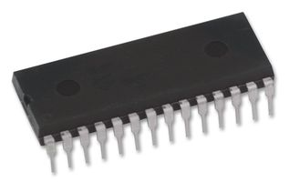

-
This has been posted on other forums, so I figure it's about time to post it here.
I will say this once:
DO NOT send e-mails to Matt with questions about his product before asking here. If you want to know something that is not clearly covered on this page, post your questions here and we will gladly answer them for you! Don't make yourself look like an idiot! Basically what we dont want to happen is for Matt himself to get flooded with a bunch of simple questions that we can easily answer for him.
http://www.nistune.com -
which is the one that doesn't need romulator to edit?
or does v2 not allow editing? -
Rev 2 can use either an nvram chip or a romulator. If you decided to go with the nvram I would suggest waiting for rev3 as it will have the nvram built in instead of having to buy it and program it yourself. All nistune versions will provide realtime editing unless you choose not to install nvram or a romulator. I think rev3 comes with nvram by default. -
a little explanation requested, is a Willem programmer needed for each board, or can one do many?Chuck Stong
300+ Parts and Performance owner
http://www.300-plus.com
2002 ZCOT president and always active member -
the willem is a chip burner.... you can burn bmw roms or pc bios chips with it -
I really don't think that you should take it to heart like that. It was just a suggestion to keep the producer of the software from getting bombarded with questions that can be answered by people with first hand experience already using the product. It would make sense to ask the questions here as well, since you will be adapting the software to the z31. -
The post could be worded better. Basically what we dont want to happen is for Matt to get flooded with a bunch of questions that we can easily answer for him.
To answer your question I have no doubt that m30 support will work. The m30 uses the same 6303 cpu as the z32 and other ecus. I think at this point its a matter of finalizing the board design for the 6303 ecus and doing testing. The m30 code will need to be modified just like the z32 code so that it works with the extra Nistune functions. That should be a trivial task for Matt unless something stupid comes up. Unfortunately someone with an m30 ecu will need to try it out before anyone can actually gaurantee you that it works. If you are willing to be a guine pig then you can try contacting matt. -
How is nvram going to come by default?Stinky wrote: Rev 2 can use either an nvram chip or a romulator. If you decided to go with the nvram I would suggest waiting for rev3 as it will have the nvram built in instead of having to buy it and program it yourself. All nistune versions will provide realtime editing unless you choose not to install nvram or a romulator. I think rev3 comes with nvram by default.
I solder this:
onto this:
then place this nvram:

on top of this:
Also, Matt reply my email saying he will do the installation for $40 if I send him my ECU. So I kind of see this as a fairly final version......
In addition, the Willem Programer will only be used to extract the stock rom image right? Because this Nistune board will already be plugged into laptop directly using USB.Matte Black 86T - Sold -
You won't have to solder, the board and NVRAM just push into place the same as any ROM chip.
The programmer (chip burner) would only be needed if you wanted to burn a new base image on the NVRAM chip, or burn an ordinary PROM chip to put in place on the ECU when you have "completed" a tune. -
Hmm...... here is the reply I got from Matt:Jason84NA2T wrote: You won't have to solder, the board and NVRAM just push into place the same as any ROM chip.
The programmer (chip burner) would only be needed if you wanted to burn a new base image on the NVRAM chip, or burn an ordinary PROM chip to put in place on the ECU when you have "completed" a tune.
To install the boards
1. You need to remove the two factory ROM chips and
four jumpers and a resistor
2. Read the ROM chips and program the board (using a
Willem programmer in NVRAM mode)
3. Install a 28 pin machine drilled socket and install
four new jumpers
4. Solder a 4 wire connector to the 6802 CPU legs
5. Remove the factory adjustment pot and put the USB
connector in the bracket
6. Put the board in the ECU, plug in the connectors,
hot glue and reinstall into the vehicle
Some installation instructions are available. I've
taken pictures during my last install.
It will be $10AUD postage and handing for the board.
However if you want I can perform the installation
procedure here, if you send the ECU. It would be
instead $40AUD return postage
cheers
Matt
Was the soldering he mentioned referring to his own Nistune board and not to stock ECU?
So I guess a programmer isn't really necessary, if the new tune image won't be erased when I unplug the laptop right?Matte Black 86T - Sold -
There are a few wires that need to be soldered between the nistune board and the stock ecu.
Here's the deal with the nvram. Currently the nvram chip is a standard 28pin chip which can be put in the willem programmer and programmed with a few special steps. Once the base image (stock bin modified with the nistune code) is programmed on to the nvram chip it is put on to the nistune board. At this point nistune is able to alter only certain allowed addresses on the nvram which are used to tune. The base code itself is protected so you dont accidentally screw something up. If the base code of the nvram chip becomes corrupt the only way to fix it is with a willem programmer. Also, if you decide to change base code for some reason you must use a willem programmer to do so.
It's my understanding that the final nistune board design, which I'm guessing most people will end up with, will use a surface mount version of the nvram which is not removable. A special adapter will most likely be required to program the nvram with the base code.
When all is said and done I think it will work like this. When you buy nistune you will need to choose a base code for you ecu (84t, 88na, 88t, jwt, whatever). Matt will keep a collection of common base codes or if you have an odd ball you can send him your chip or a bin file of it and he can modify it for nistune. Anyway, the base code will be programmed on to the nistune board by Matt of whoever is selling the board. You will install the preprogrammed nistune board in your ecu, make any required tuning changes, and away you go. No need for a willem programmer. -
Okay so just to clarify. Once that version comes out, will we need anything to be able to tune it other than a USB cable, laptop, and the software?1985 NA2T(now RB) * 1988 SS x2 * 1984 AE x3 * 2006 350Z

-
aside for the actual install work, 100% Correct.OK85ZX wrote: Okay so just to clarify. Once that version comes out, will we need anything to be able to tune it other than a USB cable, laptop, and the software? -
sounds awesome. I'll be in for one as soon as that version comes out.
*goes searching for a laptop*
Any future plans for palm pilot support?1985 NA2T(now RB) * 1988 SS x2 * 1984 AE x3 * 2006 350Z
-
i just paid off my desk top computer yesterday. sounds like its time to step up to the lab top. i can't wait to get the nistune for my car. i'm very excited for this setup. and you simply cannot beat the price. i hope the guy is making a few dollars off it.

Copyright © 2006–. All rights reserved. Privacy Policy